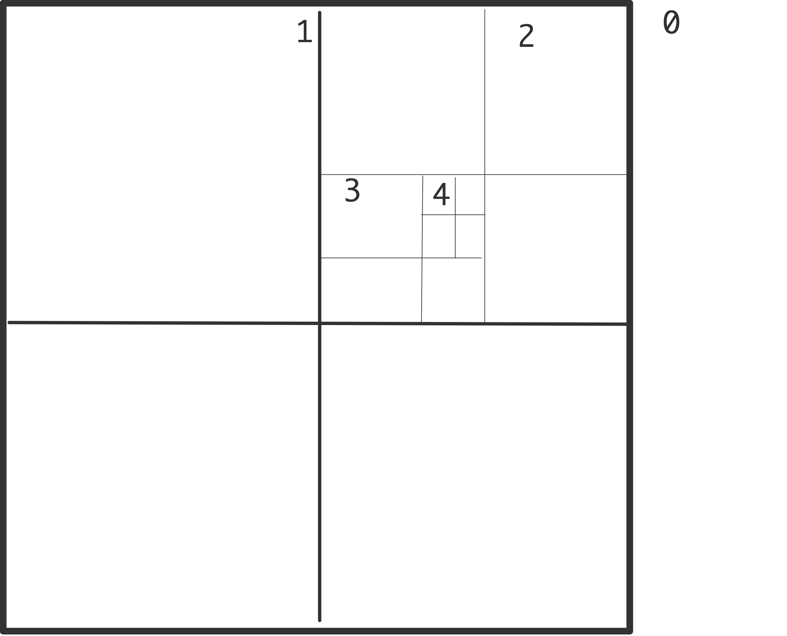
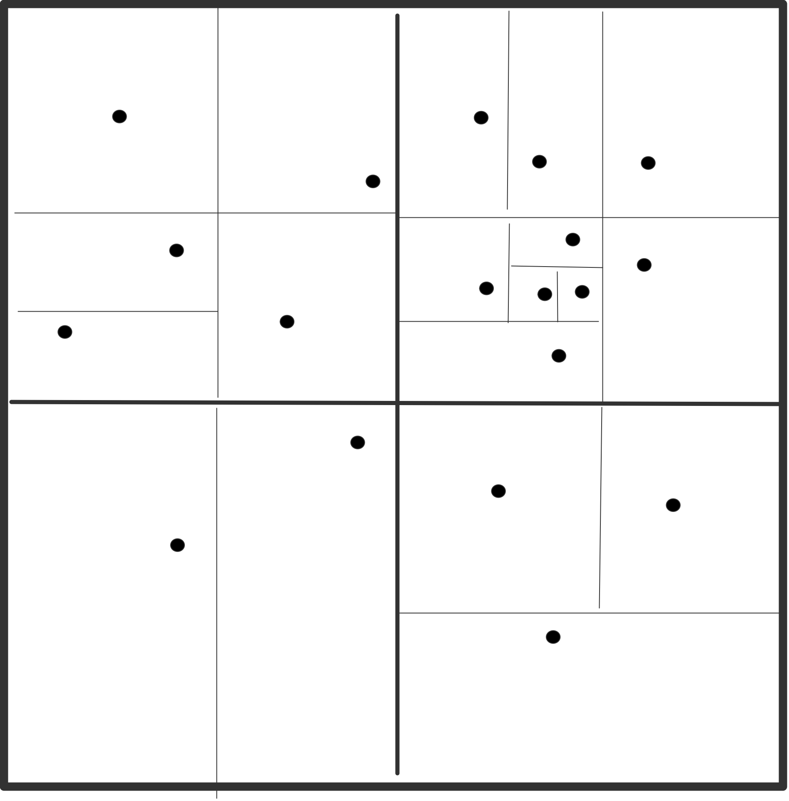
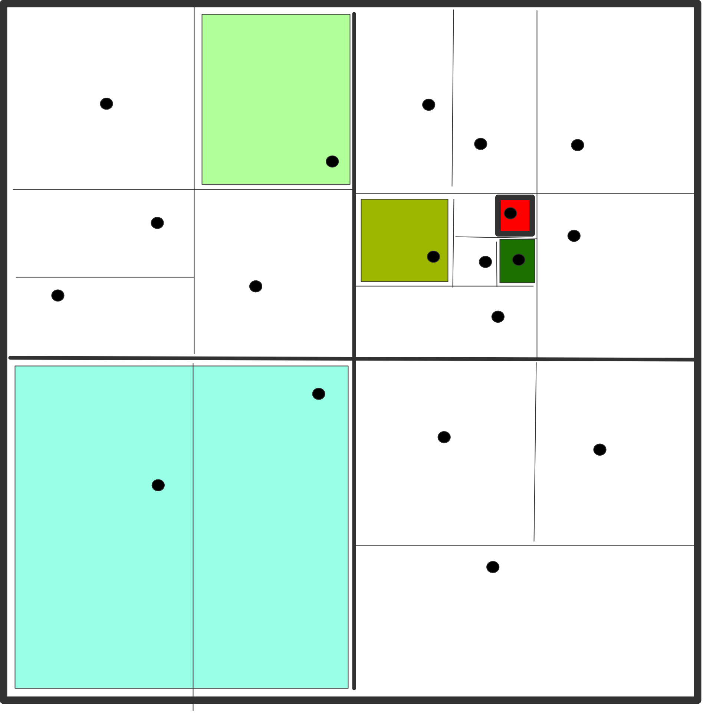

N-body problems
Experimental html version of downloadable textbook, see https://www.tacc.utexas.edu/~eijkhout/istc/istc.html
10.2 : The Fast Multipole Method
10.3 : Full computation
10.4 : Implementation
10.4.1 : Vectorization
10.4.2 : Shared memory implementation
10.4.3 : Distributed memory implementation
10.4.4 : 1.5D implementation of the full method
10.4.4.1 : Problem description
10.4.4.2 : Particle distribution
10.4.4.3 : Work distribution
Back to Table of Contents
10 N-body problems
In chapter Numerical treatment of differential equations we looked at continuous phenomena, such as the behaviour of a heated rod in the entire interval $[0,1]$ over a certain time period. There are also applications where you may be interested in a finite number of points. One such application is the study of collections of particles, possibly very big particles such as planets or stars, under the influence of a force such as gravity or the electrical force. (There can also be external forces, which we will ignore; also we assume there are no collisions, otherwise we need to incorporate nearest-neighbour interactions.) This type of problems is known as N-body problems; for an introduction see http://www.scholarpedia.org/article/N-body_simulations_(gravitational) .

WRAPFIGURE 10.1: Summing all forces on a particle
{r}{2.5in} A basic algorithm for this problem is easy enough:
For a small enough time interval this algorithm gives a reasonable approximation to the truth.
The last step, updating the particle positions, is easy and completely parallel: the problem is in evaluating the forces. In a naive way this calculation is simple enough, and even completely parallel:
for each particle $i$
for each particle $j$
let $\bar r_{ij}$ be the vector between $i$ and $j$;
then the force on $i$ because of $j$ is
$\quad f_{ij} = -\bar r_{ij}\frac{m_im_j}{|r_{ij}|}$
(where $m_i,m_j$ are the masses or charges) and
$f_{ji}=-f_{ij}$.
The main objection to this algorithm is that it has quadratic computational complexity: for $N$ particles, the number of operations is~$O(N^2)$.
If we had $N$ processors, the computations for one update step would take time~$O(N)$. What is the communication complexity? Hint: is there a collective operations you can use?Several algorithms have been invented to get the sequential complexity down to $O(N\log N)$ or even $O(N)$. As might be expected, these are harder to implement than the naive algorithm. We will discuss a popular method: the Barnes-Hut algorithm [BarnesHut] , which has $O(N\log N)$ complexity.
10.1 The Barnes-Hut algorithm
crumb trail: > discrete > The Barnes-Hut algorithm
The basic observation that leads to a reduction in complexity is the following. If you are calculating the forces on two particles $i_1,i_2$ that are close together, coming from two particles $j_1,j_2$ that are also close together, you can clump $j_1,j_2$ together into one particle, and use that for both $i_1,i_2$.
Next, the algorithm uses a recursive division of space, in two dimensions in quadrants and in three dimensions in octants; see figure 10.2 .
\hbox{%   } \caption{Recursive subdivision of a domain in quadrants with levels indicated (left); actual subdivision with one particle per box (right)}
The algorithm is then as follows. First total mass and center of mass are computed for all cells on all levels:
for each level $\ell$, from fine to coarse:
\>for each cell $c$ on level $\ell$:
\>\> compute the total mass and center of mass
\>\>\> for cell $c$ by considering its children
\> if there are no particles in this cell,
\>\> set its mass to zero
Then the levels are used to compute the interaction with each particle:
for each particle $p$:
\>for each cell $c$ on the top level
\>\>if $c$ is far enough away from $p$:
\>\>\>use the total mass and center of mass of $c$;
\>\>otherwise consider the children of $c$

WRAPFIGURE 10.3: Boxes with constant distance/diameter ratio
{r}{2.5in} The test on whether a cell is far enough away is typically implemented as the ratio of its diameter to its distance being small enough. This is sometimes referred to as the `cell opening criterium'. In this manner, each particle interacts with a number of concentric rings of cells, each next ring of double width; see figure 10.3 .
This algorithm is easy to realize if the cells are organized in a tree. In the three-dimensional case, each cell has eight children, so this is known as an octtree .
The computation of centres of masses has to be done each time after the particles move. Updating can be less expensive than computing from scratch. Also, it can happen that a particle crosses a cell border, in which case the data structure needs to be updated. In the worst case, a particle moves into a cell that used to be empty.
10.2 The Fast Multipole Method
crumb trail: > discrete > The Fast Multipole Method
The FMM computes an expression for the potential at every point, not the force as does Barnes-Hut. FMM uses more information than the mass and center of the particles in a box. This more complicated expansion is more accurate, but also more expensive. In compensation, the FMM uses a fixed set of boxes to compute the potential, rather than a set varying with the accuracy parameter theta, and location of the center of mass.
However, computationally the FMM is much like the Barnes-Hut method so we will discuss their implementation jointly.
10.3 Full computation
crumb trail: > discrete > Full computation
Despite the above methods for judicious approximation, there are also efforts at full calculation of the $N^2$ interactions; see for instance the NBODY6 code of Sverre Aarseth; see http://www.ast.cam.ac.uk/ sverre/web/pages/home.htm . Such codes use high order integrators and adaptive time steps. Fast implementation on the Grape computer exist; general parallelization is typically hard because of the need for regular load balancing.
10.4 Implementation
crumb trail: > discrete > Implementation
Octtree methods offer some challenges on high performance architectures. First of all, the problem is irregular, and secondly, the irregularity dynamically changes. The second aspect is mostly a problem in distributed memory, and it needs load rebalancing ; see section 2.10 . In this section we concentrated on the force calculation in a single step.
10.4.1 Vectorization
crumb trail: > discrete > Implementation > Vectorization
The structure of a problem as in figure 10.2 is quite irregular. This is a problem for vectorization on the small scale of SSE / AVX instructions and on the large scale of vector pipeline processors (see section 2.3.1 for an explanation of both). Program steps `for all children of a certain box do something' will be of irregular length, and data will possibly be not stored in a regular manner.
This problem can be alleviated by subdividing the grid even if this means having empty boxes. If the bottom level is fully divided, there will always be eight (in three dimension) particles to operate on. Higher levels can also be filled in, but this means an increasing number of empty boxes on the lower levels, so there is a trade-off between increased work and increasing efficiency.
10.4.2 Shared memory implementation
crumb trail: > discrete > Implementation > Shared memory implementation
Executed on a sequential architecture, this algorithm has complexity $O(N\log N)$. It is clear that this algorithm will also work on shared memory if each particle is turned into a task. Since not all cells contain particles, tasks will have a different running time.
10.4.3 Distributed memory implementation
crumb trail: > discrete > Implementation > Distributed memory implementation
The above shared-memory version of the Barnes-Hut algorithm can not immediately be used in a distributed memory context, since each particle can in principle access information from any part of the total data. It is possible to realize an implementation along these lines using a hashed octtree , but we will not persue this.
We observe data access is more structured than it seems at first. Consider a particle $p$ and the cells on level $\ell$ that it interacts with. Particles located close to $p$ will interact with the same cells, so we can rearrange interaction by looking at cells on level $\ell$ and the other cells on the same level that they interact with.
This gives us the following algorithm [Katzenelson:nbody] : the calculation of centres of mass become a calculation of the force $g^{(\ell)}_p$ exerted by a particle $p$ on level $\ell$:
for level $\ell$ from one above the finest to the coarsest:
\>for each cell $c$ on level $\ell$
\>\>let $g^{(\ell)}_c$ be the combination of the $g^{(\ell+1)}_i$
for all children $i$ of $c$
With this we compute the force on a cell:
for level $\ell$ from one below the coarses to the finest:
\>for each cell $c$ on level $\ell$:
\>\>let $f^{(\ell)}_c$ be the sum of
\>\>\>1. the force $f^{(\ell-1)}_p$ on the parent $p$ of $c$, and
\>\>\>2. the sums $g^{(\ell)}_i$ for all $i$ on level $\ell$ that
\>\>\>\>satisfy the cell opening criterium
We see that on each level, each cell now only interacts with a small number of neighbours on that level. In the first half of the algorithm we go up the tree using only parent-child relations between cells. Presumably this is fairly easy.
The second half of the algorithm uses more complicated data access. The cells $i$ in the second term are all at some distance from the cell $c$ on which we are computing the force. In graph terms these cells can be described as cousins: children of a sibling of $c$'s parent. If the opening criterium is made sharper, we use second cousins: grandchildren of the sibling of $c$'s grandparent, et cetera.
Argue that this force calculation operation has much in common, structurally, with the sparse matrix-vector product.
In the shared memory case we already remarked that different subtrees take different time to process, but, since we are likely to have more tasks than processor cores, this will all even out. With distributed memory we lack the possibility to assign work to arbitrary processors, so we need to assign load carefully. SFCs can be used here to good effect (see section 2.10.5.2 ).
10.4.4 1.5D implementation of the full method
crumb trail: > discrete > Implementation > 1.5D implementation of the full method
It is possible to make a straightforward parallel implementation of the full $N^2$ method by distributing the particles, and let each particle evaluate the forces from every other particle.
Since forces are symmetric, we can save a factor of two in work by letting particle $p_i$ only interact with particles $p_j$ with $j>i$. In this scheme, an equal distribution of data, e.g., particles, leads to an uneven distribution of work, e.g., interactions. How do the particles need to be distributed to get an even load distribution?Assuming we don't care about the factor of two gain from using symmetry of forces, and using an even distribution of the particles, this scheme has a more serious problem in that it asymptotically does not scale.
The communication cost of this is
If we however distribute the force calculations, rather than the particles, we come to different bounds; see~ [Driscoll:optimal-nbody] and references cited therein.
With every processor computing the interactions in a block with sides $N/\sqrt P$, there is replication of particles and forces need to be collected. Thus, the cost is now
10.4.4.1 Problem description
crumb trail: > discrete > Implementation > 1.5D implementation of the full method > Problem description
We abstract the N-body problem as follows:
In the IMP model, the algorithm is sufficiently described if we know the respective data distributions; we are not immediately concerned with the local computations.
10.4.4.2 Particle distribution
crumb trail: > discrete > Implementation > 1.5D implementation of the full method > Particle distribution
\def\dottimes{\mathbin{\cdot_\times}}
An implementation based on particle distribution takes as its starting point the particle vector~$c$ distributed as~$c(u)$, and directly computes the force vector $f(u)$ on the same distribution. We describe the computation as a sequence of three kernels, two of data movement and one of local computation\footnote{In the full IMP theory~ [Eijkhout:ICCS2012] the first two kernels can be collapsed.}:
\begin{cases} \{ \alpha\colon c(u) \}&\hbox{initial distribution for $c$ is $u$}\\ C(u,*) = c(u)\dottimes c(*)&\hbox{replicate $c$ on each processor}\\ \hbox{local computation of $F(u,*)$ from $C(u,*)$}\\ f(u) = \sum\_2 F(u,*)&\hbox{local reduction of partial forces}\\ \hbox{particle position update} \end{cases} \label{eq:nbody-1d} \end{equation}The final kernel is a reduction with identical $\alpha$ and $\beta$-distribution, so it does not involve data motion. The local computation kernel also has not data motion. That leaves the gathering of $C(u,*)$ from the initial distribution $c(u)$. Absent any further information on the distribution $u$ this is an allgather of $N$ elements, at a cost of $\alpha\log p+\beta N$. In particular, the communication cost does not go down with $p$.
With a suitable programming system based on distributions, the system of equations \eqref{eq:nbody-1d} can be translated into code.
10.4.4.3 Work distribution
crumb trail: > discrete > Implementation > 1.5D implementation of the full method > Work distribution
The particle distribution implementation used a one-dimensional distribution $F(u,*)$ for the forces conformally with the particle distribution. Since $F$ is a two-dimensional object, it is also possible to use a two-dimensional distribution. We will now explore this option, which was earlier described in [Driscoll:optimal-nbody] ; our purpose here is to show how this strategy can be implemented and analyzed in the IMP framework. Rather than expressing the algorithm as distributed computation and replicated data, we use a distributed temporary, and we derive the replication scheme as collectives on subcommunicators.
For a two-dimensional distribution of $F$ we need $(N/b)\times (N/b)$ processors where $b$ is a blocksize parameter. For ease of exposition we use $b=1$, giving a number of processors $P=N^2$.
We will now go through the necessary reasoning. The full algorithm in close-to-implementable form is given in figure 10.4 .
\begin{array}{ll} \{\alpha\colon C( D\colon <I,I>) \}&\hbox{initial distribution on the processor diagonal}\\ C(I,I) = C(I,p)+C(q,I)&\hbox{row and column broadcast of the processor diagonal}\\ F(I,I)\leftarrow C(I,I)&\hbox{local interaction calculation}\\ f(D\colon<I,I>)=\sum\_2 F(I,D\colon *)&\hbox{summation from row replication on the diagonal} \end{array} \label{eq:nbody-1.5d} \end{equation}FIGURE 10.4: IMP realization of the 1.5D N-body problem
For simplicity we use the identify distribution $I\colon p\mapsto\{p\}$.
Initial store on the diagonal of the processor grid
{r}{2in} We first consider the gathering of the tuples $C_{ij}=\langle c_i,c_j\rangle$. Initially, we decide to let the $c$ vector be stored on the diagonal of the processor grid; in other words, for all $p$, processor $\langle p,p\rangle$ contains $C_{pp}$, and the content of all other processors is undefined.
To express this formally, we let $D$ be the diagonal $\{\langle p,p\rangle\colon p\in P\}$. Using the mechanism of partially defined distributions the initial $\alpha$-distribution is then
C( D\colon <I,I>)\equiv D\ni \langle p,q\rangle\mapsto C(I(p),I(q))=C\_{pq}. \label{eq:c-alpha} \end{equation}
Replication for force computation
{r}{2in} The local force computation $f_{pq}=f(C_{pq})$ needs for each processor $\langle p,q\rangle$ the quantity $C_{pq}$, so we need a $\beta$-distribution of $C(I,I)$. The key to our story is the realization that \[ C_{pq} = C_{pp}+C_{qq} \] so that \[ C(I,I) = C(I,p)+C(q,I) \] (where $p$ stands for the distribution that maps each processor to the index value $p$ and similarly for $q$.)
To find the transformation from $\alpha$ to $\beta$-distribution we consider the transformation of the expression $C(D\colon\langle I,I\rangle)$. In general, any set $D$ can be written as a mapping from the first coordinate to sets of values of the second: \[ D\equiv p\mapsto D_p\qquad\hbox{where}\qquad D_p=\{q\colon \langle p,q\rangle\in D\}. \] In our particular case of the diagonal we have \[ D\equiv p\mapsto\{p\}. \] With this we write
C(D\colon \langle I,I\rangle) = C(I,D\_p\colon I) = C(I,\{p\}\colon p). \label{eq:c-alpha-rewrite} \end{equation}Note that equation \eqref{eq:c-alpha-rewrite} is still the $\alpha$-distribution. The $\beta$-distribution is $C(I,p)$, and it is an exercise in pattern matching to see that this is attained by a broadcast in each row, which carries a cost of \[ \alpha \log\sqrt p + \beta N/\sqrt P. \] Likewise, $C(q,I)$ is found from the $\alpha$-distribution by column broadcasts. We conclude that this variant does have a communication cost that goes down proportionally with the number of processors.
Local interaction calculation
The calculation of $F(I,I)\leftarrow C(I,I)$ has identical $\alpha$ and $\beta$ distributions, so it is trivialy parallel.
Summing of the forces
{r}{2in} We have to extend the force vector $f(\cdot)$ to our two-dimensional processor grid as $f(\cdot,\cdot)$. However, conforming to the initial particle distribution on the diagonal, we only sum on the diagonal. The instruction \[ f(D\colon<I,I>)=\sum_2 F(I,D\colon *) \] has a $\beta$-distribution of $I,D:*$, which is formed from the $\alpha$-distribution of $I,I$ by gathering in the rows.